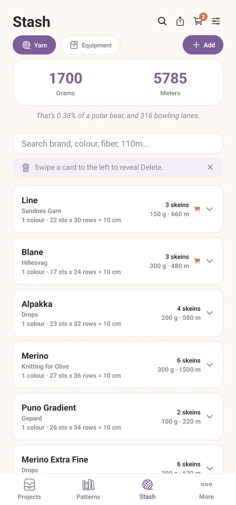
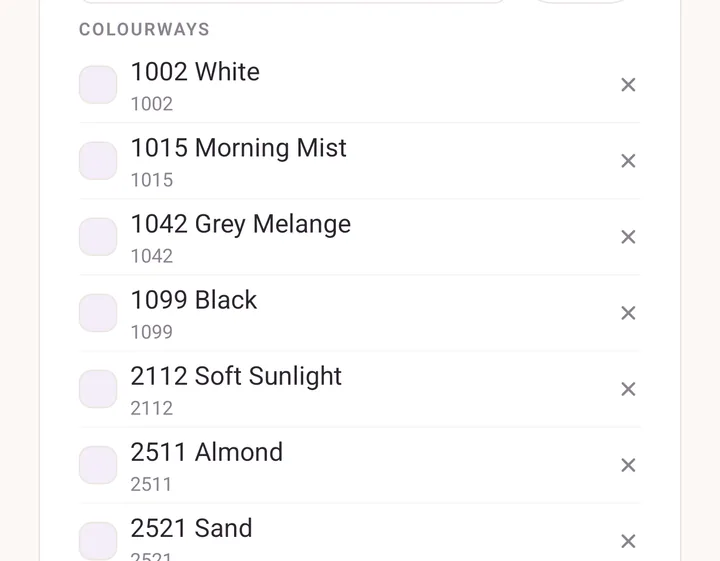
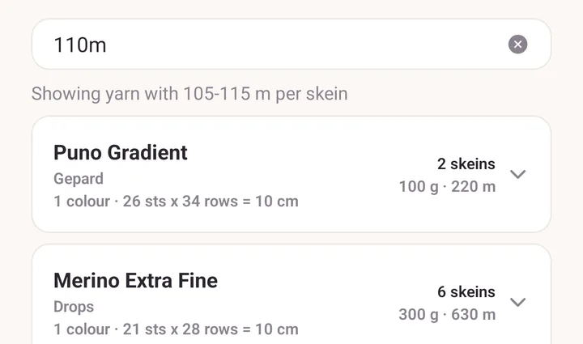
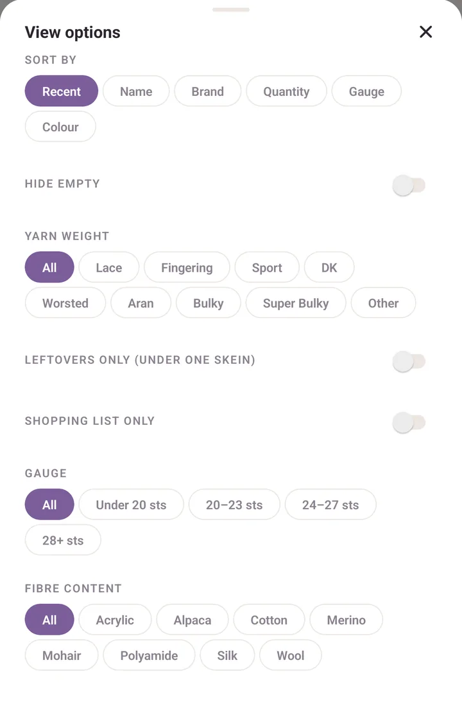
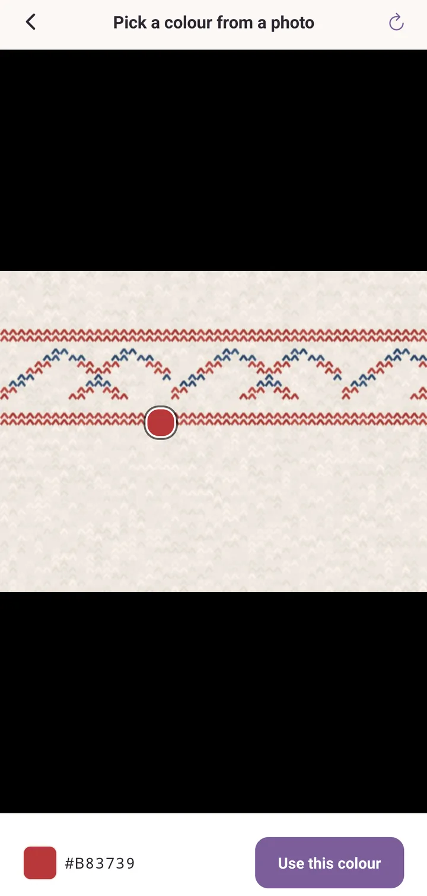

Yarn stash
What is in your basket, your bin, your closet. Tracked so you know what you have without rummaging.
How the stash is arranged
The Stash tab opens on Yarn. The Equipment chip beside it switches to needles and hooks.
Above the list are your totals in grams and metres (or ounces and yards, if you set Imperial (oz, yd) in Settings). Under them is the list itself, in three levels:
- a group for each brand and yarn name,
- a row for each colour inside it,
- a row for each dye lot, when you hold a colour in more than one.
Tap a group to open and close it. Tap a colour row to open the yarn.

Adding yarn
Tap Add, to the right of the Yarn and Equipment chips. The Add yarn form opens. Only a little is required: a brand and a skein count is enough to save, and the rest can wait.
Two shortcuts sit at the top of the form, and only when you are adding rather than editing:
- Pick from library fills the form from a yarn you have saved before.
- The barcode button beside it opens the scanner. See Barcodes and the yarn library.
The fields, in the order you meet them:
- Brand. Start typing and you get suggestions: brands you have used, plus the built-in catalogue of Nordic producers.
- Yarn name. Once a brand is picked, the names narrow to that brand's yarns. Picking a known one fills in weight, fibre and meterage, but only where you have not typed something yourself.
- Colour / colourway, by name or number. Suggestions show the shade beside the name where Purl knows it.
- Dye lot, optional, and worth having. Same colour, different dye lot, slightly different shade.
- Colour swatch, the picker for the shade itself.
- Weight: Lace, Fingering, Sport, DK, Worsted, Aran, Bulky, Super Bulky, Other.
- Fibre composition: tap Add fibre and set percentages. Purl tells you when they add up to 100%.
- Skeins, Grams / skein, Meters / skein, straight off the band.
- Needle and Gauge.
- Notes. A web address you type here becomes a tappable link.
- Add to shopping list, if you already know you want more.
Advanced holds the rest: Price / skein, Store, Crochet hook, Crochet gauge, Care, and the Barcodes attached to this yarn.
Tap Add to stash to save. On an existing yarn the button reads Save changes, with Save as a copy and Delete yarn below it.
Multi-colour yarns
Self-striping, variegated, gradient. Pick the first shade in the colour picker, and a Yarn colours row appears under it. Tap Add another for a second shade, and a third, up to ten. Tap a swatch to edit it, or its cross to drop it.
The yarn then shows as horizontal stripes wherever it appears. How hard the bands meet is set by Multi-colour yarn blend in Settings.
The colours Purl remembers
Purl learns your yarn as you use it. This is the part that makes the second skein of anything quick.
A colour name means a shade. Save "Sandnes Garn Sunday" in "Curry" once, and the next time you type Curry under that yarn the swatch fills itself in. The suggestion list shows the shade next to the name, so you can see it before you pick.
A barcode can mean a colour, not just a product. That is what a ball-band barcode really is in the shop: it identifies the shade on the shelf. So when you scan a code Purl has seen on a colour before, you get the colour back, not just the yarn line.
One colour is one row. The colour name is the identity. If two entries of the same yarn ended up as two separate "Curry" rows because a swatch was tapped wrong once, they fold back into a single row on their own.
A clash is a question, not a silent split. If you save a new skein whose shade disagrees with a colour of that name you already own, Purl asks Same colour name, different shade once, while you can still tell: Use the one I have, or Keep this one. It only asks on a new yarn. Editing an existing one is taken as a deliberate correction.
You can see and correct what it learned. Open More, then Barcode scanner under Power tools, and tap a yarn in Saved yarns. Its Colourways list shows every colour Purl knows for that yarn, with the shade, the colour code and how many barcodes point at it. Tap the cross on a colour to forget it.

Searching
The search field sits above the list. It folds accents, so "Jarbo" finds "Järbo", and it matches brand, yarn, colour, fibre and dye lot.
It also reads ball-band measurements. Type a number with a unit and Purl filters by what a skein holds instead of by text:
110mfinds skeins of about 110 metres, here 105 to 115.50gfinds the 50 gram put-ups, here 45 to 55.100-120msets your own window.>200mis everything longer,<=50geverything lighter.
Yards and ounces work the same way. A line under the field tells you which window it settled on, for example Showing yarn with 105-115 m per skein, so you are never guessing what it did.

Sorting and filtering
Tap the sliders icon in the Stash header for View options.
- Sort by: Recent, Name, Brand, Quantity, Gauge, Colour. Your choice is remembered.
- Hide empty drops anything at zero skeins.
- Yarn weight shows one weight at a time.
- Leftovers only (under one skein) for scrap projects.
- Shopping list only for what you have flagged to buy.
- Fibre content: one fibre at a time, drawn from what your stash actually holds, so it appears once at least one yarn has its fibres filled in.
- Gauge: Under 20 sts, 20 to 23 sts, 24 to 27 sts, 28+ sts.

Gestures worth knowing
- Swipe a card left for Delete.
- Swipe a card right for To buy, which puts it on your shopping list.
- Long-press a colour row to copy that yarn. Purl asks first, then opens the copy for editing. Good for "same yarn, different colour".
- Long-press a saved colour swatch in the picker to take it off Your colours. The colour itself is not lost.
- Long-press a material chip in the equipment form to remove it.
Picking a colour off a photo
In the colour picker, tap the eyedropper next to the hex field. Pick a colour from a photo lets you Take a photo or Pick from library, then tap the picture to sample a pixel. Tap Use this colour. The fastest way to get a real match off a skein rather than guessing at a wheel.

Dye lots
When you hold one colour across two or more dye lots with skeins in both, the colour row warns you: Different dye lots: alternate skeins to avoid a visible line. Worth heeding on a yoke.
Sharing your stash
The share icon in the Stash header sends your whole yarn list as plain text, grouped by brand, with colours, dye lots and counts. Handy in a message to a friend, or to yourself in a shop. Equipment shares the same way from the Equipment view.
Equipment
The Equipment chip switches the same tab to needles, hooks and tools. Add works the same way, with its own View options for Type and Material.
Interchangeable needles split into tips and cables, so you track what you actually own, and a project can use any combination of them. Sizes you own summarises the coverage.
Turning the built-in catalogue off
Open More, tap the gear in the header, and find Built-in yarn catalogue under Defaults. Set it to Off and Purl stops suggesting brands, yarns and colourways from the bundled Nordic catalogue, leaving only the yarns you added yourself.
See also
- Tutorial: your yarn, in and out: scanning, weighing in, and the shopping list, start to finish.
- Barcodes and the yarn library: what the scanner knows, and how to correct it.
- Projects: where yarn meets a pattern, and where weigh-ins happen.
- Backups: keeping all of this safe.